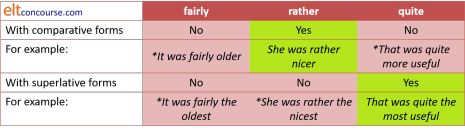

Comparison
Making comparisons is a key communicative skill.
Unfortunately, it's also a neglected skill because most teaching
starts and stops with a consideration of how we form comparative
statements with adjectives and adverbs and how we use the
conjunctions than and as/so ... as to connect the
ideas.
As we shall see, there's rather more to it than that.
Adjective comparison |
There is no great mystery to how we use adjectives to make
comparisons with either the than or the as/so ... as
formulation. For example:
She is older than I (the inflected form)
That's more expensive than this (the periphrastic form)
That's not so nice as mine
This is as good as it gets
etc.
At this point, it is important that you understand the difference
between the periphrastic forms (more, most and less,
least) and the inflected forms (the addition of -er
and -est).
 |
Equality |
The usual ways in which adjectives and adverbs are used to express
equality is by using the as ... as formulation in, e.g.:
This is as big as a house
I am as old as you
It is as beautiful as a flower
etc.
It used to be suggested that the negative form should be the so
... as formulation as in, e.g.:
It's not so long as the other one
They are not so old as their cousins
etc.
In modern English, the distinction is no longer adhered to and not
worth teaching.
The only thing to note is that the so ... as formulation is
- more formal
- not allowed in affirmative statements so we cannot have
*She is so good at mathematics as you
The second part of this correlating conjunction is frequently
ellipted. For example:
This is not as/so good (as something else)
 |
Form: inflexion or periphrasis? |
The rules in English for making the comparative and superlative
forms of adjectives are slightly complicated. Often,
they are abbreviated for pedagogical purposes to something like:
Use the -er / -est endings + ...than...
for short adjectives and the more / most + ...than...
for longer adjectives.
For elementary learners, that may suffice but it will lead to error
because it oversimplifies to the point of inaccuracy.
Structural errors such as:
This is the boringest book I have ever read
She is a carefuller driver than you
will arise by applying rules like this and even phonological errors
such as pronouncing simpler as /ˈsɪm.pələ/ instead of /ˈsɪm.plə/
may also follow.
Here's a run-down of the major rules that learners need to assimilate at some point:
- It is possible
to use periphrastic forms with all
adjectives, especially when use predicatively. For example:
Donald Trump is wealthy but Bill Gates is more wealthy
This is especially the case when the amplifier adverb even is added to the mix:
She was rude but her husband was even more rude.
But:- A number of common monosyllabic adjectives resist the
periphrastic forms and these include:
big, clean, far, fast, great, high, low, old, young, small, thick, thin, wide. - The adjectives good and bad always resist the periphrastic forms.
- A number of common monosyllabic adjectives resist the
periphrastic forms and these include:
- If the sound at the end of the adjective is an
unstressed vowel (such as /i/, /l/ or /ə(r)/, then the inflexional change is most
common:
noisier, wealthier, chubbier, narrower, gentler, subtler, cleverer, maturer etc.
To this list we can add some common disyllabic ones such as common, quiet, handsome, polite etc. all of which end in an unvoiced sound.
However, when an adjective ends with -re or -er (pronounced /ə(r)/) some speakers abjure what is to them the displeasing sound /ə.rə/ at the end of, e.g.
cleverer, bitterer, maturer
etc. and prefer to use the periphrastic form making, e.g.:
more mature, more slender, more eager, more clever, more meagre
etc.
Because the superlative form does not end in /ə(r)/ but in /rɪst/ speakers may be less unhappy to use the inflected form. We can get, therefore, the rather odd:
more clever, cleverest, more tender, tenderest
and so on.
Adjectives which occupy this uncomfortable space include:
bitter, chipper, clever, eager, limber, meagre / meager [AmE], slender, sober and tender
Some others, including
inner, lower, outer, proper, rubber, silver, upper, utter
are usually ungradable or classifying so the issue does not arise. - With other disyllabic adjectives the periphrastic form is preferred:
more basic, most comic, more pot-bound, most hated etc. - Adjectives formed by suffixation with -ful, -ish and
-less always make the comparative and superlative forms
periphrastically:
more useful, most foolish, more hopeless etc.
All adjectives formed with -able and -ible are at least trisyllabic so follow the same pattern. - No participle adjectives, however long or short, inflect (we always have the periphrastic more tiring, more worn and most bored, not *tiringer, *wornest, *injureder or *boredest).
- The periphrastic forms, more and most,
have antonyms in less and least:
more clever > less stupid
more interesting > less boring
The meaning and emphasis are different, of course. - The syllabic '-le' ending (/ᵊl/) on words like simple, humble etc. changes to a non-syllabic /l/ when used in the comparative or superlative form. (So, e.g., humbler is pronounced /ˈhʌm.blə/ not /ˈhʌm.bᵊlə/.)
- Spelling changes are:
- final consonants are doubled if the preceding vowel is a
stressed single letter:
big > biggest
fat > fatter
etc. - when the base ends in a consonant + 'y', the 'y' is
dropped
and 'i' is substituted:
early > earlier
snappy > snappiest
etc. - when the base ends in a silent -e, it is dropped:
sure > surer
safe > safer
(An alternative way to state this rule for learners is to say that only -r or -st rather than -er or -est is added in this circumstance.)
- final consonants are doubled if the preceding vowel is a
stressed single letter:
- There's a group of common adjectives which make comparative and
superlative forms from different roots:
good-better-best, bad-worse-worst, far-further/farther-furthest/farthest. - The form of older commonly used in family relationships, elder-eldest, can only be used attributively (as in the eldest daughter not *the daughter is eldest). Older than is preferred to *elder than.
- The adjectives well and ill referring to
health form the comparatives with better and worse
and have no superlative forms. In fact, what appears to be
a comparative form, better, is often a simple synonym
for well as in:
He is completely better now. - The adjectives small and little are often interchangeable in the base forms. However, in the comparative and superlative forms, smaller and smallest are preferred to littler and littlest. The latter two are often confined to children's talk.
 |
Pronouns and case |
| taller and older than me |
Pedants among us will consume quite a lot of energy telling us
that the correct form of the pronoun after than is the
nominative case, I, we, they rather than the accusative
case me, us, them etc. Accordingly, it may be
insisted that
He is older than me
is wrong and should be
He is older than I
or
They work harder than us
is wrong and should be
They work harder than we
The justification for this lies in reinserting the ellipted item and
making the sentences as
He is older than I am
and not the clearly wrong
*He is older them me am
or
They work harder than we work
and not
*They work harder than us work
etc., thus demonstrating that the pronoun is actually the subject of
the verb, not its object or complement.
Informally, at least, the accusative forms of the pronouns are at
least as common as the 'correct' nominative pronouns.
In fact, the use of an accusative, object form of the pronoun can
also be justified by classifying than as a preposition
rather than a conjunction. In English, all prepositions are
followed by the accusative case. In an expression such as:
The car weighs more than a ton
the word than is a preposition because we cannot
rephrase the clause to use than as a conjunction as
*The car weighs more than a ton weighs
To add to this mix, we need to consider some potential ambiguity.
Consider these two sentences:
She likes you more than I
She likes you more than me
In the first sentence, the meaning is that
She likes you more than I like you
but in the second sentence, the meaning is that
She likes you more than she likes me
It is only by insisting on the use of the correct case for the
pronoun that the ambiguity can be avoided so the informal
She likes you more than me
could carry either meaning.
 |
Adverb comparison |
| speak more assertively |
Adverbs generally follow the same set of rules that we saw above
for adjectives. The difference is that adverbs which end in -ly
take the periphrastic form rather than the inflected form so we get,
e.g.:
happily > more happily > most happily
gently > more gently > most gently
etc.
For example:
They played more happily in the sunshine
She spoke the most gently of them all
etc.
Here are the exceptions:
- Two adverbs ending in -ly do not follow the rules:
- early can function as an adjective or an adverb as
in:
the early bus (adjective)
and
they came early (adverb)
In both cases, the word follows the adjective form in the comparative and superlative:
early > earlier > earliest
so we get, e.g.:
We arrived earlier than you
so:
*They arrived more early
is actually wrong although it follows the general rule. - The adverb badly takes the comparative and
superlative forms of the adjective bad:
badly > worse > worst
so we get, e.g.:
They played worse than you
In this case, by contrast, it is just possible to have:
They played more badly than you did
and if the emphasiser even is used, that is more common:
They played even more badly than you did.
- early can function as an adjective or an adverb as
in:
- There are a number of adverbs that are identical to the
adjective forms, including, commonly, late, hard, fast
and long. These form the comparatives and
superlatives by inflexion as in, e.g.:
He hit it harder and harder
They arrived later than you
He drove faster than I could
He spoke longer than was advisable
etc. - The adverb soon has no equivalent adjective and
follows the rules as for an adjective:
The sooner we get there the better - The adjectives quick, loud and cheap are often used
adverbially in informal English so we get, e.g.:
I bought it cheaper than I thought possible
He played the music louder and louder
I drive quicker than her
(There are many who aver that these forms are wrong but, informally at least, they are commonly heard.) - Far less commonly, adverbs may be formed with other
suffixes. When this occurs, the situation becomes slightly
complex. There are four main ways that this happens, for
example:
- Adding the suffix wards (or usually
ward in AmE) to get
northwards etc.
Many of these adverbs, such as backwards, forwards, homewards are, semantically, ungradable so issues do not arise.
With others comparison is usually with further / farther so we get, e.g.:
We carried on further northwards
He pushed it further upwards - Adding the suffixes wise and ways to get, e.g., crabwise, clockwise, lengthwise, edgeways, sideways etc. results in ungradable adverbs so no comparison can be made. We cannot have, e.g., *more clockwise.
- Adding the suffix wide gives unusual adverbs
such as nationwide, countrywide, continent-wide and
so on (often hyphenated) and these are gradable but the
comparatives such as:
The product sold more nationwide
etc. are very rare.
- Adding the suffix wards (or usually
ward in AmE) to get
northwards etc.
- A phenomenon known as the proleptic use of adjectives allows
for what seems to be a verb modified by an adjective rather than
an adverb. For example:
Roll the dough flatter
Hammer the sheet thinner
Screw the bolt tighter
It is not, in fact, that case that these modifiers are referring to the verb. What they are referring to is the end state of the noun phrase. The word proleptic means looking forward or anticipating a state to be reached.
less, least, too, most and more than comparison |
|
| Thank you. Too kind of you |
These four words cause some difficulty but we'll take the easy ones first.
- less and least
- The words less and least are similar in
form to the periphrastic uses of more and most
but they reduce the degree of an adverb or adjective rather than
increasing it.
No inflected form in English exists for this concept so we use these modifiers with all gradable terms, regardless of their length and form.
As with the adjectival and adverbial uses of more and most the word least is reserved for more than two items in formal speech although, informally, least is often used in, e.g.:
She is the least intelligent of the two
where a purist would probably prefer
She is the less intelligent of the two
which would also be the form of choice in careful speech or formal writing.
The words modify both adjectives and adverbs equally so we get, e.g.:
He walked less quickly after his fall
She drove the least fast
She was less happy with the second meal
They were the least contented of all the customers
etc. - too and most
- These have a simple function in many cases:
- most forms the superlative of adjectives
according to the rules set out above and in the guide to
adjectives and it also modifies nearly all adverbs in the
same way. We get, for example:
That is the most interesting of all of them
She walked the most quickly
etc.
In this sense, the words are always used in tandem with the definite article because the reference is specific and definite. - too usually suggests more than is required
and also modifies adjectives and adverbs in parallel ways.
We get, for example:
This is too heavy
meaning, heavier than it should be
My teacher speaks too quickly
I.e., more quickly than he should
- most is often, in rather formal language used
to mean very or extremely. We get,
for example:
That is most interesting
meaning extremely interesting
She walked most quickly
I.e., very quickly
etc.
With adjectives, this use is confined to non-inherent forms so, while we allow:
She is most happy
(i.e., very happy), we do not allow:
*She is most tall - too is also used to enhance the meaning of the
adjective or adverb and suggests that its use is somehow
inadequate to express the sense intended. Again, the
use is considered rather formal. We get, for example:
This is just too delicious
You really are too kind
meaning, more than delicious and more than just kind.
She danced too beautifully
I.e., beautifully is an inadequate term
He didn't speak too well
I.e., poorly.
The modifier too is often paired with just in this sense and this use is often synonymous with very but only occurs in negative clauses.
- most forms the superlative of adjectives
according to the rules set out above and in the guide to
adjectives and it also modifies nearly all adverbs in the
same way. We get, for example:
- more than
- This expression sometimes serves a simple functions to
compare adjectives and adverbs as in:
She is more interested in science than art
He drives more carefully than he used to
etc.
However, there is another use of more than which is not used this way. This use implies either:- The adjective is inadequate to describe the notion (see
the equivalent use of too above). For
example:
She is more than busy these days
meaning that busy does not adequately describe how she is.
I was more than happy with the work
meaning
I was delighted with the work - The second compared adjective is inaccurate and should
be better phrased with the first as in, e.g.:
She is more tired than angry
meaning tired is a better description than angry.
He is more lazy than stubborn
meaning lazy is the better description.
*He is lazier than stubborn
is not allowed. - The adjective is inadequate to describe the notion (see
the equivalent use of too above). For
example:
the .... the comparison |
|
| the hotter the better |
This construction, which has parallels in many languages, is a correlative subordinator. It is unique in this role in English in expressing proportional comparison, i.e., comparing relative notions of one thing rising or falling in parallel with another. It can link a variety of grammatical elements (although it is often, sadly, taught only as an adjective linker):
- Linking adjectives:
The hotter the weather, the lazier I get - Linking adverbs and adjectives:
The faster he drove, the more frightened I became
The longer I waited, the more irritated I became - Linking nouns and adjectives:
The more people, the noisier the party will be - Linking verbs and adjectives:
The more he shouted, the redder he became - Linking verbs and nouns:
The more I drove the greater my tiredness
In this construction, the restrictions on the periphrastic forms
with short adjectives are not so severe so, e.g.:
The more old he became the more wise people thought him
is acceptable but
*He is more old
is not.
The conjunction can, in other words, be used with both the
inflexional and periphrastic forms of adjectives.
The conjunction has become institutionalized in some fixed
expressions such as the more the merrier, the sooner the better
etc.
Modification of comparatives and superlatives |
Expressions of comparison can be pre-modified with amplifiers and downtoners:
- with amplifiers, for example:
- that's much better
- that's far worse
- it's a lot less interesting
- it's obviously more expensive
- he drives much more carefully now
- she arrived a good bit sooner than I
- the film was great, the book yet/even greater
- with downtoners, for example:
- that's rather more exciting
- she arrived slightly sooner
- they were hardly any more useful
- he drove a little more slowly
- it seemed relatively / comparatively more important
 |
Restrictions with fairly, quite and rather |
These common adverb modifiers are restricted in the way they modify comparative and superlative phrases.
- The adverb modifier fairly cannot be
used at all with either comparative or superlative expressions,
so we do not allow, e.g.:
- *That's fairly better
- *That's fairly more expensive
- *This is fairly the best
- *That's fairly the most important
- The modifier quite can be used with
its sense of completely to modify superlative phrases, so we
allow, e.g.:
- This was quite the best meal I've eaten here
- She was quite the most skilful musician in the school
- However, quite cannot be used with
comparative expressions, so we do not allow, e.g.:
- *That was quite the more important point
- *He was quite happier
- The modifier rather can be used to
amplify comparative phrases, so we allow, e.g.:
- That was rather nicer than I expected
- She was rather ruder than she should have been
- However, rather cannot be used to
modify superlative expressions, so we do not allow, e.g.:
- *He was rather the most intelligent boy in my class
- *She was rather the best musician
Equivalent expressions in other languages do not invariably, or
at all, have these restrictions so the point needs to be taught, not
assumed.
Here's a summary of that:

 |
The functions of comparative clauses |
A comparative phrase can perform five grammatical functions:
- It can be adverbial as in
She arrived much sooner than me - It can be the subject of the verb
Many more people believed him than didn't - It can be the complement of a copular verb
She is so much happier than she was - It can be the direct object of the verb
I bought more food than anyone else - It can be the indirect object of the verb
She gave more children a good home than anyone else
 |
Adverbials and conjunctions |
Adjuncts, conjuncts, conjunctions, disjuncts and prepositional phrases are frequently used to express notions of comparison. The distinction between a conjunct and a conjunction is not central to this guide but, if you are curious, try the guide to conjunction for an explanation. There is also a guide to adjuncts, conjuncts and disjuncts. Both open in new tabs.
- Adjuncts
- Adjuncts serve to add information to the verb phrase and its
complement and two
adverbs in particular express the notion of comparison:
This is comparatively urgent
He became relatively rich - Conjuncts
- Conjuncts fall outside the clause structure and usually
serve to link ideas between sentences. Those that act to
express comparison include, for example:
The meeting will be long, I'm afraid, but, more importantly, it will concern all departments
He was much admired for his leadership. Less well known was his technical expertise
She is a very good player. The same may be said of her sister
The government has been heavily criticised and likewise the opposition
This is important but, on the other hand, so is the current problem
She dances well. By contrast/comparison, her brother has two left feet - Conjunctions
- Conjunctions are an integral part of a clause and removing
them usually leaves nonsense. To express comparison of
some sort, they are usually subordinating or coordinating
conjunctions. The words than, like and the as ...
as or as if forms are conjunctions but others can be used. For
example:
He played like his life depended on it
She drove as if she was the only one on the road
They understood it as soon as it was explained
He came by car whereas I walked
They arrived early but she late
What you say now is true although that wasn't always the case - Disjuncts
- Disjuncts show the speaker's attitude or the angle and are
slightly rarer as indicators of comparison. For example:
Relatively speaking, this is not so important
Comparatively viewed, this is less important - Prepositions
- Some prepositions can be used to take the place of the
conjunction than. For example:
The price is higher vis-à-vis that of the competition
The price is lower against/beside/alongside/versus that of the competition
Verbs and nouns expressing comparatives |
We saw above that phrases of comparison can function
grammatically in five ways and speakers / writers often deploy a
range for effect or to achieve the required style.
Particularly in academic English, verbal expressions, usually of
relation, are used instead of the straightforward comparative forms
of adjectives or adverbs. Nouns, too, often derived from the
same verbs, are used in the same way. Their use is often
combined with conjuncts and conjunctions. For example:
| Instead of ... | ... we get ... |
| The number of people entering the country is more than it was | The rate of immigration is rising |
| People are buying more butter than margarine | The sale of butter is outpacing that of margarine |
| Butter is more expensive than margarine | Margarine outprices butter |
| Arsenal played better than Chelsea | Arsenal outplayed Chelsea |
| There are many more female students studying engineering these days | The numbers of female students studying engineering shows a marked increase |
| I like Mozart more than Bach | I prefer Mozart to Bach |
| The government is less popular than the opposition | The government's popularity is lower, compared with the opposition |
| He worked faster than me | He worked with more speed than I did |
| She is happier than you | Her happiness exceeds yours |
| They offered more money than I could | They outbid me |
and so on.
For students whose need is for academic English or who will need to
write formal essays comparing and contrasting, the ability
confidently to employ verbs and nouns which express comparison is,
of course, invaluable.
 |
Other languages |
All languages have a way of making comparatives and superlatives, of course. How they do it may lead to errors in the production of learners of English. It is impossible to be comprehensive in what follows but the range of ways is some indication of the challenges facing learners of English.
- Isolating languages such as Chinese do not rely on
inflexion to change the meaning of words and, as one would
expect, use a particle (translatable often as than) to
show that one thing is being compared to another and adjectives
are not inflected. The order of words is often a source of
error in English such as:
*The house than the cottage comfortable (meaning The house is more comfortable than the cottage) - Japanese and Korean, too, form the comparative with a
particle and make no change to the adjective.
However, word order differences can lead to errors such as:
*London is Tokyo more cold (meaning London is colder than Tokyo)
*The cottage more small the house - Many inflecting languages (especially European ones
including most Germanic, Scandinavian and Slavic languages) do
not employ the periphrastic formulations, using only adjective
inflexions to signal comparison, and that can lead to errors
such as:
*The house is comfortabler than the cottage
Learners with these first languages should not, however, have difficulty with the as ... as construction since parallels exist. - Many languages (such as Arabic) do not have a copular verb
like be and that can lead to errors such as:
*The house more comfortable than the cottage - Arabic also has distinct forms of adjectives used in the
comparative and superlative and does not always make a
distinction between comparative and superlative and that can
lead to error such as :
*He better in the class
The language also requires the insertion of a particle to signal comparison so the use of than in English should not cause a problem. - Greek only distinguishes between the comparative and
superlative by the insertion of the definite article and that
can lead to a similar mistake:
*She is the taller in the class - Romance languages, such as Italian, French and Spanish,
despite inflecting verbs heavily, do not inflect adjectives to
show comparative and superlative meanings. The
periphrastic forms in English will be familiar by analogy but
may be overused and lead to error such as:
*The more big house
*The most old church
In summary, presenting and practising ways to express comparative
and superlative meanings need to focus explicitly on form because
very few languages are at all similar to English in this respect
(and most are considerably simpler). Concept, on the other
hand, is not problematic.
A little comparative language work can often alert learners to the
need to be careful in this area and notice the differences between
language structures.
| Related guides | |
| conjunction | for a general guide |
| adverbials | for a guide to adjuncts, conjuncts and disjuncts |
| adverbial intensifiers | for more on intensifiers which serve to emphasise, amplify and tone down meanings |
| synonymy | for more on the use of simile and as ... as formulations |
| adjectives | for a guide which includes some consideration of comparison |
| adverbs | for a guide which includes some consideration of comparison |